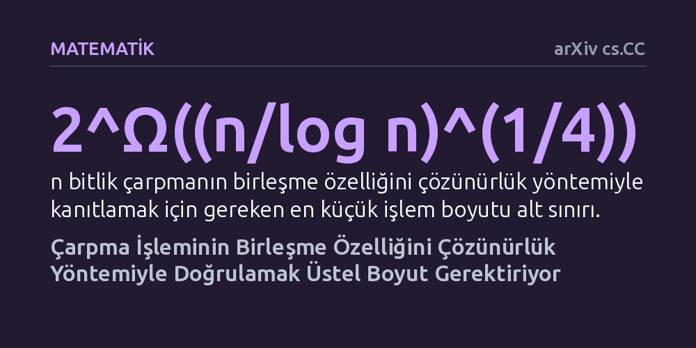

MATEMATIK · arXiv cs.CC · 2026-10-09
Mantıksal çözücülerin çarpma işlemlerini neden zor doğruladığı araştırıldı ve n bitlik çarpmanın birleşme özelliğini çözünürlük yöntemiyle kanıtlamanın üstel boyutta işlem gerektirdiği gösterildi. Bu sonuç, çözücülerin yaşadığı zorluğun algoritma hatasından değil, yöntemin kuramsal sınırlarından kaynaklandığını ortaya koyuyor.
Bilgisayarların çarpma işlemlerini mantıksal olarak kanıtlamakta zorlanmasının nedeninin zayıf algoritmalar değil, temel kanıt sisteminin aşılamaz matematiksel sınırları olduğunu gösteriyor.

Modern bilgisayar biliminde yazılım ve donanımların hatasız çalıştığını doğrulamak için mantıksal önerme çözücülerinden (SAT çözücüler) yararlanılır. Bu araçlar milyonlarca değişken içeren devasa mantıksal bulmacaları şaşırtıcı bir hızla çözebilirken, iş basit görünen bir aritmetik kuralına geldiğinde aniden yavaşlamaktadır. Bilgisayarlar için temel bir aritmetik işlem olan çarpmanın birleşme özelliğini, yani üç sayının çarpımında sıranın sonucu değiştirmediğini doğrulamak, bu çözücüler için adeta aşılmaz bir duvara dönüşmektedir.
On yılı aşkın süredir araştırmacılar bu tıkanıklığın nereden kaynaklandığını anlamaya çalışıyordu. Çözücülerin pratikte başarısız olduğu biliniyordu; ancak bunun nedeni algoritmaların kısa ve pratik bir kanıtı bulmayı başaramaması mıydı, yoksa ortada kısa bir kanıtın hiç bulunmaması mıydı? Bu temel soru, matematiksel kanıt karmaşıklığında uzun süredir açık bir problem olarak duruyordu.
Bu soruyu yanıtlamak için deneysel gözlemler yerine kuramsal matematik ve karmaşıklık kuramı yöntemleri kullanıldı. Yazar, doğrudan karmaşık çarpım devrelerini analiz etmek yerine, bilgisayar biliminde sıkça başvurulan bir indirgeme stratejisi kurdu. Bu strateji, çözülmesi zorluğu önceden bilinen bir matematiksel yapıyı hedeflenen çarpma problemine dönüştürme mantığına dayanır.
Kanıt kurgusunda, özel bağlantı yapılarına sahip çift parçalı genişletici çizgeler üzerindeki mükemmel eşleme ilkesi temel alındı. Daha önceki matematiksel çalışmalar, bu eşleme ilkesinin temel çözünürlük kuralıyla kısa yoldan kanıtlanamayacağını göstermişti. Yazar, bu ilkeyi n bitlik çarpanların birleşme özelliğine bağlayarak, çizgedeki zorluğun doğrudan çarpma problemine aktarılmasını sağladı.
Analizin sonucunda, n bitlik çarpma işleminin birleşme özelliğini çözünürlük yöntemiyle kanıtlamanın en az 2 üzeri Omega((n/log n)^(1/4)) boyutunda işlem gerektirdiği matematiksel olarak kesinleşti. Bu alt sınır, problemin boyutu büyüdükçe kanıtın üstel olarak uzadığını ve dolayısıyla çözücülerin makul bir sürede sonuca ulaşmasının imkânsız olduğunu gösteriyor. Böylece Beame ve Liew tarafından ortaya atılan uzun süreli açık problem çözülmüş oldu.
Üstelik bu sınır yalnızca soyut bir çarpan modeli için değil, günümüz donanım doğrulama sistemlerinde ve SMT çözücülerinde yaygın olarak kullanılan standart dizi ve Wallace ağacı çarpanları gibi kısmi çarpım toplamına dayalı geniş bir kodlama sınıfı için geçerlidir. Çalışma ayrıca, bu sonucu Håstad'ın son bulgularıyla birleştirerek, daha güçlü bir kanıt sistemi olan sınırlı derinlikli Frege sistemlerinde de üstel büyümenin kaçınılmaz olduğunu ortaya koydu.
Elde edilen sonuç, endüstride ve akademik araştırmalarda sıkça kullanılan çözücülerin çarpma işlemlerinde neden takıldığını netleştirmektedir. Araştırmada belirtildiği gibi "SAT çözücülerinin çarpma üzerine akıl yürütürken pratikte yetersiz kaldığı ampirik olarak bilinmektedir" tespiti, artık bir algoritma eksikliği değil, kuramsal bir imkânsızlık olarak tanımlanmıştır. Çözücüler kısa kanıtı bulamadıkları için değil, böyle kısa bir kanıt temel çözünürlük mantığı içinde matematiksel olarak var olamayacağı için zorlanmaktadır.
Bu durum, mikroişlemci tasarımı ve kriptografi gibi donanım düzeyinde çarpma işlemlerinin doğrulanması gereken alanlarda kritik bir çıkarım sunmaktadır. Mevcut çözünürlük temelli yaklaşımları sadece daha fazla işlem gücüyle hızlandırmaya çalışmak bir çözüm sağlamayacaktır. Aritmetik içeren büyük doğrulamalarda çözücülerin tıkanmasını aşmak için çözünürlükten daha güçlü ve cebirsel akıl yürütme yapabilen yeni nesil kanıt sistemlerine odaklanılması gerekmektedir.